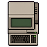

Home › Village and crafting › Professions, ANBU and gear
Professions, ANBU and gear
Venator, Bard, Soulcaster, Monster Trainer, Sensor and ANBU.
In short
Venator, Bard, Soulcaster, Monster Trainer, Sensor and ANBU trees, plus gadgets, talismans and gear. ANBU division arts need one of six masks worn; Bard techniques need an instrument in hand.
Professions
- The Venator (witch-hunter), The Art of the Bard, Soulcaster, Monster Trainer and Sensor Specialist are profession trees.
- Venator, Bard, ANBU and Monster Trainer count as universal ninjutsu in the ninja build: technique scrolls, mission rewards and scroll merchants can teach them, up to the build's universal rank cap. Sensor and Soulcaster count as Medical.
- Bard techniques need a musical instrument in hand (flute, shamisen, war drum, horn, harp or bell staff). Better instruments make stronger songs.
ANBU
- The ANBU tree comes with ANBU division arts and ANBU arts.
- Division arts need one of six ANBU masks worn: Falcon (tracking), Owl (sound), Bear (defence), Cat (stealth), Frog (healing auras), Wolf (interrogation). Only pawns who know the ANBU tree can make masks.
Gadgets
- Spyglass, radio headset, field radio, caltrops, bell cord alarm, grappling hook, shinobi goggles, covert listening device, motion scanner and field medic kit.
- Talismans (one at a time, belt slot) from the Venator: Clear Mind, Warding, Hunter's and Ash Oath.
- Sensors: heat sensor, noise sensor and laser tripwire (which also stuns). A

desktop computer next to a hi-tech research bench speeds up research.
Clothing and gear
- Boots of speed, boots of striding and springing, gloves of digging, cloaks of protection, displacement and lightning, battle cloaks, fire-resistant, cold-weather and hot-weather clothing, courtier's clothing, a tactical vest and a patrol pack.
- Weapons: battle umbrellas, throwing disks, war boomerangs, senbon, and two legendary blades, the clockwork blade and the blade of the dhampir.